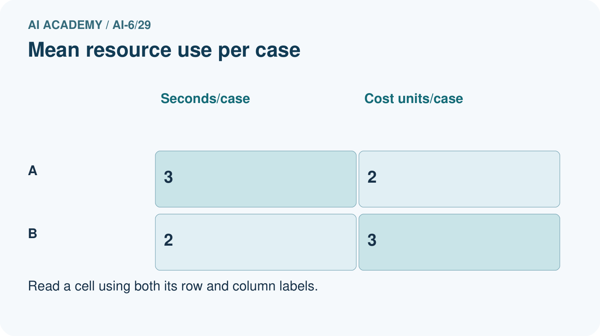
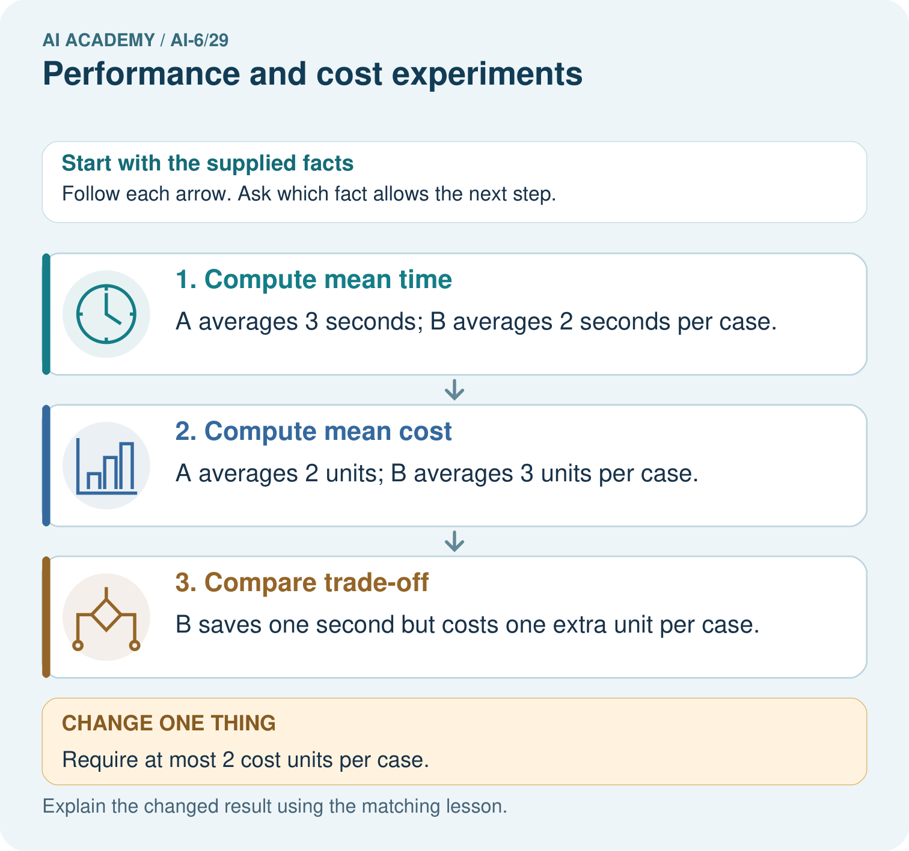
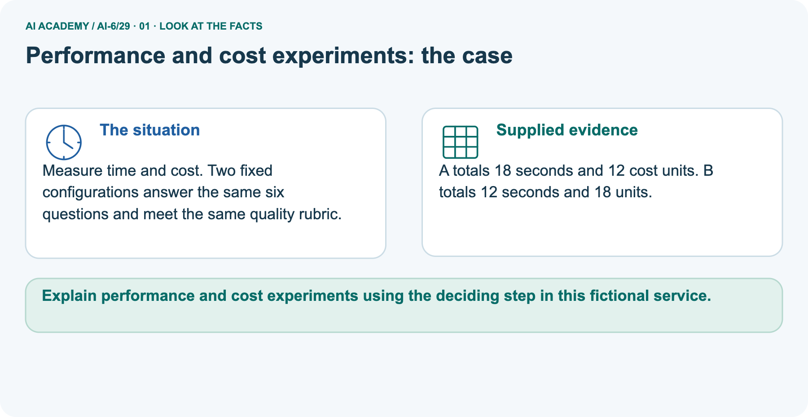
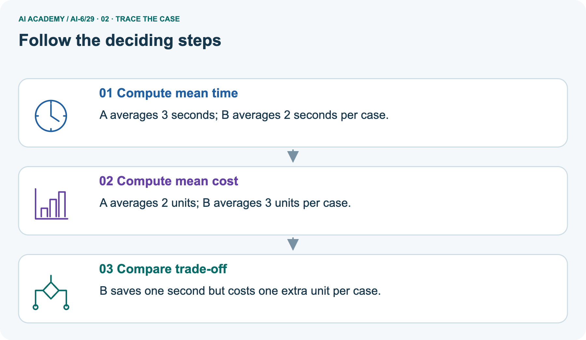
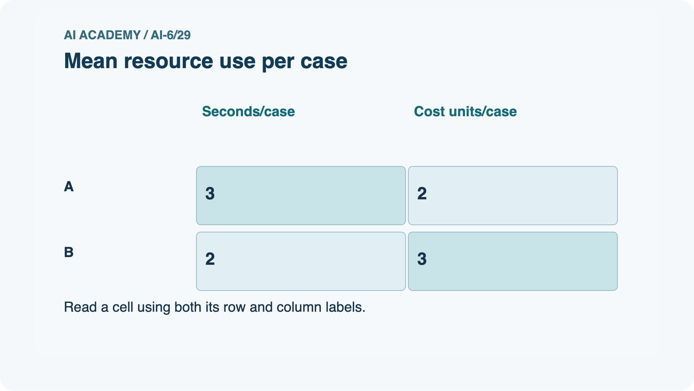
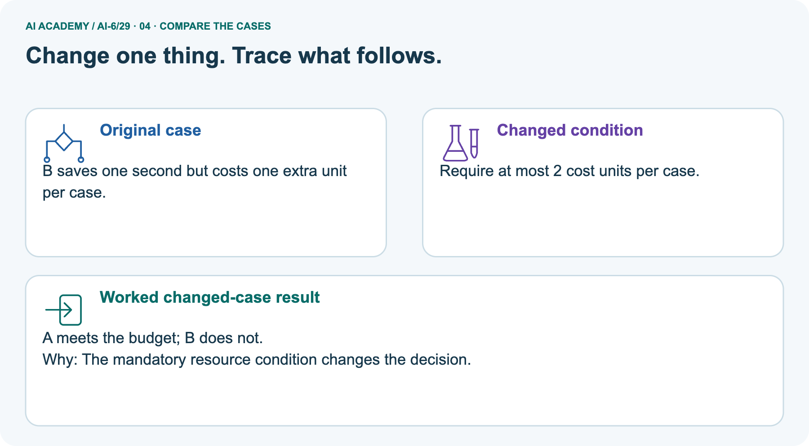
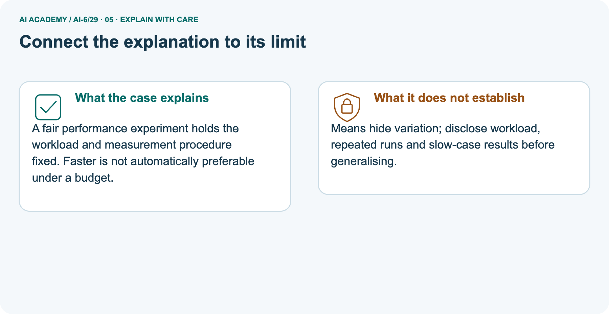
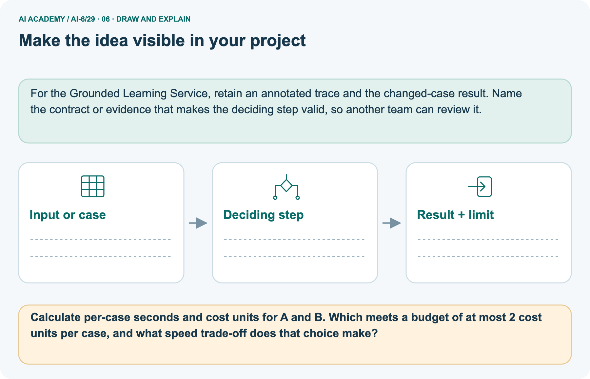

AI Academy · Level 6 · Grade 11 · Week 29 · Workbook
Performance and cost experiments
Learn to understand, design, build, test and explain AI systems responsibly.
Project: Grounded Learning Service
THE CONNECTED WEEK
One complete matched-workload performance record.
Keep case IDs, durations, outcomes, timing scope, cost units, objective and remaining evidence gaps together.
Keep one habit: Recall → W1–W3/W5 → independent C/D case → performance project → delayed return.
Main lesson · Section 1
Recall · Retrieve before notes
Keep this task’s inputs,rule and response together.
Complete task and evidence
Try the recall before opening notes. Then use a different colour or a labelled second line to correct your explanation.
Without opening the old lesson, explain one key idea from Accessibility and user feedback. Give an example and a mistake that the idea helps you avoid.
Without opening the old lesson, explain one key idea from Incident investigation. Give an example and a mistake that the idea helps you avoid.
Without opening the old lesson, explain one key idea from Deployment environments. Give an example and a mistake that the idea helps you avoid.
Use this reference for the original W1–W3 and W5 exercises. The separately named independent case supplies its own changed facts; use those facts for that attempt before feedback.
Performance experiments compare matched workloads with declared timing boundaries and quality constraints. Averages can hide slow cases.
Use the same cases and environment; record every duration and success. For a simple median sort values and average the middle pair for even counts. Keep failed requests visible.
Accessibility and user feedback
Incident investigation
Deployment environments
Lesson reference for workbook practice
Main lesson · Section 5
W1 · Explain the current example
Keep this task’s inputs,rule and response together.
Complete task and evidence
Performance experiments need matched workloads, timing boundaries, quality constraints and complete outcomes. Main supplied Q1–Q4 durations A [1, 1, 1, 9] seconds and B [2, 2, 2, 2], all pass. A total 12, mean 3, sorted middle pair 1/1, median 1, observed max 9; B total 8, mean/median/max 2. B lowers mean but A lowers median; no universal winner without an objective.
Added duration scope is request start to final outcome, including failure records. Separate picture six cases each with supplied equivalent quality: A 18 seconds/12 cost units, B 12 seconds/18 units; means A 3 seconds/2 units, B 2 seconds/3 units. Changed budget is mean cost at most 2 units: A meets equality, B fails. Totals alone establish no individual cap, median or maximum. Units are fictional, not currency.
Preserve failed outcomes, slow cases, case IDs, settings and timing scope. Added code keeps all durations in a separate 3/4-quality probe. Constructed arithmetic is not an actual benchmark, repeated-run study, stable tail estimate or current provider-price comparison.
Explain the weekly mechanism in your own words. Use the worked scenario to name its input, decision rule and output.
Main lesson · Section 6
W2 · Trace the calculation
Keep this task’s inputs,rule and response together.
Complete task and evidence
Performance experiments need matched workloads, timing boundaries, quality constraints and complete outcomes. Main supplied Q1–Q4 durations A [1, 1, 1, 9] seconds and B [2, 2, 2, 2], all pass. A total 12, mean 3, sorted middle pair 1/1, median 1, observed max 9; B total 8, mean/median/max 2. B lowers mean but A lowers median; no universal winner without an objective.
Added duration scope is request start to final outcome, including failure records. Separate picture six cases each with supplied equivalent quality: A 18 seconds/12 cost units, B 12 seconds/18 units; means A 3 seconds/2 units, B 2 seconds/3 units. Changed budget is mean cost at most 2 units: A meets equality, B fails. Totals alone establish no individual cap, median or maximum. Units are fictional, not currency.
Preserve failed outcomes, slow cases, case IDs, settings and timing scope. Added code keeps all durations in a separate 3/4-quality probe. Constructed arithmetic is not an actual benchmark, repeated-run study, stable tail estimate or current provider-price comparison.
Durations A=[1, 1, 1, 9] seconds, B=[2, 2, 2, 2]. All pass. Compute mean and median. Show the intermediate steps and give the conclusion with its scope.
Main lesson · Section 7
W3 · Repair a misconception
Keep this task’s inputs,rule and response together.
Complete task and evidence
Performance experiments need matched workloads, timing boundaries, quality constraints and complete outcomes. Main supplied Q1–Q4 durations A [1, 1, 1, 9] seconds and B [2, 2, 2, 2], all pass. A total 12, mean 3, sorted middle pair 1/1, median 1, observed max 9; B total 8, mean/median/max 2. B lowers mean but A lowers median; no universal winner without an objective.
Added duration scope is request start to final outcome, including failure records. Separate picture six cases each with supplied equivalent quality: A 18 seconds/12 cost units, B 12 seconds/18 units; means A 3 seconds/2 units, B 2 seconds/3 units. Changed budget is mean cost at most 2 units: A meets equality, B fails. Totals alone establish no individual cap, median or maximum. Units are fictional, not currency.
Preserve failed outcomes, slow cases, case IDs, settings and timing scope. Added code keeps all durations in a separate 3/4-quality probe. Constructed arithmetic is not an actual benchmark, repeated-run study, stable tail estimate or current provider-price comparison.
A report omits this qualification: Resource improvement under one workload is not universal efficiency or equal quality. Explain how omitting it could change a reader's interpretation, and write an accurate replacement.
Main lesson · Section 9
W5 · Explain the limitation
Keep this task’s inputs,rule and response together.
Complete task and evidence
Performance experiments need matched workloads, timing boundaries, quality constraints and complete outcomes. Main supplied Q1–Q4 durations A [1, 1, 1, 9] seconds and B [2, 2, 2, 2], all pass. A total 12, mean 3, sorted middle pair 1/1, median 1, observed max 9; B total 8, mean/median/max 2. B lowers mean but A lowers median; no universal winner without an objective.
Added duration scope is request start to final outcome, including failure records. Separate picture six cases each with supplied equivalent quality: A 18 seconds/12 cost units, B 12 seconds/18 units; means A 3 seconds/2 units, B 2 seconds/3 units. Changed budget is mean cost at most 2 units: A meets equality, B fails. Totals alone establish no individual cap, median or maximum. Units are fictional, not currency.
Preserve failed outcomes, slow cases, case IDs, settings and timing scope. Added code keeps all durations in a separate 3/4-quality probe. Constructed arithmetic is not an actual benchmark, repeated-run study, stable tail estimate or current provider-price comparison.
For the worked scenario, propose one additional case that could reveal a failure, describe its expected outcome before running it, and explain what would need to remain fixed for a fair comparison.
Do not reuse W4 as a new final test after receiving feedback.
Main lesson · Section 4
Try alone · Selected transfer
Keep this task’s inputs,rule and response together.
Complete task and evidence
C=[1, 2, 3, 10], D=[3, 3, 3, 3]. Compute means/medians; one D response is wrong.
Attempt this case before feedback. Record any help. Earlier examples below are further practice; a case already practised with feedback cannot establish fresh transfer.
Independent case: Apply a new case independently
Main lesson · Section 10
Project · Keep the service evidence
Preserve the contract, inputs, observed outcomes and limits.
Complete task and evidence
Add a labelled performance and cost experiments evidence sheet to Grounded Learning Service. Show how you can explain the mechanism and terminology of performance and cost experiments.
Use the supplied fictional case and keep its inputs, intermediate steps, calculation or prediction, and limitation. Connect this record to last week’s record; a matching answer without a trace is insufficient.
Main lesson · Section 11
Feedback · Repair and return
Keep this task’s inputs,rule and response together.
Complete task and evidence
Revisit this idea with your teacher after a delay. Familiarity is different from explaining and using it on a changed case.
| Evidence | My record |
|---|---|
| Worked alone / hint / model | |
| First step I repaired and why | |
| New case checked later; date and result | |
| What I can now explain without notes | |
| One remaining question |
Reference bank and extra practice
Choose the reference that helps your next step.
Reference · Supported W2 record
Reference · Section 2
Reference · Supported W2 record
Keep this task’s inputs,rule and response together.
Complete task and evidence
Use W2: Trace the worked case for Performance and cost experiments. Record the answer once; the lesson and workbook refer to the same attempt.
| Given inputs | Procedure I chose | Middle steps | Result and check |
|---|---|---|---|
Extra practice · Individual reasoning check
Reference · Section 3
Extra practice · Individual reasoning check
Keep this task’s inputs,rule and response together.
Complete task and evidence
Use the worked case for Performance and cost experiments. Proposed explanation: “The worked result establishes every future case”. Decide whether this explanation is supported.
Point to the step or supplied fact that decides; explain your repair if needed.
Reference · Earlier W4 response copy
Reference · Section 8
Reference · Earlier W4 response copy
Keep this task’s inputs,rule and response together.
Complete task and evidence
C=[1, 2, 3, 10], D=[3, 3, 3, 3]. Compute means/medians; one D response is wrong.
Extra practice · Pictured case
Reference · Section 12
Extra practice · Pictured case
Keep this task’s inputs,rule and response together.
Complete task and evidence
Measure time and cost. Two fixed configurations answer the same six questions and meet the same quality rubric.
A totals 18 seconds and 12 cost units. B totals 12 seconds and 18 units.
Calculate per-case seconds and cost units for A and B. Which meets a budget of at most 2 cost units per case on average, and what speed trade-off does that choice make?
Support used: alone / hint / worked example. This record is practice evidence.
Project connection: For the Grounded Learning Service, retain an annotated trace and the changed-case result. Name the contract or evidence that makes the deciding step valid, so another team can review it.






Reference · Project milestone
Reference · Section 13
Reference · Project milestone
Keep this task’s inputs,rule and response together.
Complete task and evidence
Project: Grounded Learning Service
Current milestone: Prepare the demonstration. Gather reproducible instructions, evidence, access checks and remaining limitations.
For the Grounded Learning Service, retain an annotated trace and the changed-case result. Name the contract or evidence that makes the deciding step valid, so another team can review it.
| Evidence to keep | My record |
|---|---|
| This week’s input and deciding step | |
| Prediction and actual result (or labelled paper trace) | |
| One change since the previous checkpoint and why | |
| One error or limit and the next test |
Extra practice · Predict,check and repair
Reference · Section 14
Extra practice · Predict,check and repair
Keep supported feedback separate from the independent case.
First supported question and optional hint
Measure time and cost. Two fixed configurations answer the same six questions and meet the same quality rubric.
Which labelled step matches this detail? B saves one second but costs one extra unit per case.
1. Compute mean cost
2. Compute mean time
3. Compare trade-off
Hint if needed: Read the steps in the pictorial case. Match the supplied detail to the stage that performs or records it.
Practice 1: explain the deciding evidence
Check after the first attempt
After your attempt, compare with the supported explanation: Compare trade-off B saves one second but costs one extra unit per case. A fair performance experiment holds the workload and measurement procedure fixed.
Faster is not automatically preferable under a budget.
Changed-case question and optional hint
Changed-case practice: Require at most 2 cost units per case on average. Which conclusion is supported by the supplied facts?
1. This one example guarantees correct results for every future input.
2. A meets the budget; B does not.
3. We can decide the result without examining the changed input or the procedure.
Hint if needed: Use the changed condition and the deciding step in the pictorial trace. The answer must say what follows from those facts.
Practice 2: explain the deciding evidence
Check after the changed attempt
After your attempt, compare with the supported explanation: A meets the budget; B does not. The mandatory resource condition changes the decision.
Repair and retain the record
Review Accessibility and user feedback (ai-6/28). Goal: Explain the mechanism and terminology of accessibility and user feedback.
Short practice: Explain what each text, keyboard and assistive-technology change adds to the feedback. Why does changing the red circle to orange alone not solve the communication barrier?.
Return to this week and explain what you changed.
Review Incident investigation (ai-6/26). Goal: Explain the mechanism and terminology of incident investigation. Short practice: Order the three incident records and locate the old evidence version.
How does the investigation change if the trace instead retrieves version 6 but drafts room C?. Return to this week and explain what you changed.
Review Deployment environments (ai-6/23). Goal: Explain the mechanism and terminology of deployment environments. Short practice: Identify the staging data and credential boundary.
Why must the rehearsal stop if its credential reaches production even though the process is labelled staging?. Return to this week and explain what you changed.
Use Download completed work in the hosted lesson to export your answers, reflections, practice feedback and code-run evidence. Open the HTML copy to read or print it.
Drafts stay in this browser when storage is available; clear drafts on a shared device.
Earlier wording, alternatives and picture transcripts
Use this supported practice once, in the browser or on paper. Keep the reserved independent assessment for a separate first attempt before teacher feedback.
Repair a missing building block
Keep your completed work
Reference · Six-picture response sheets
Reference · Section 15
Reference · Six-picture response sheets
Choose the picture that helps explain the current step.
01. Performance and cost experiments: the case



Measure time and cost. Two fixed configurations answer the same six questions and meet the same quality rubric. Supplied facts: A totals 18 seconds and 12 cost units. B totals 12 seconds and 18 units.
Point to the given fact that matters most. Explain why it matters.
02. Follow the deciding steps



Compute mean time: A averages 3 seconds; B averages 2 seconds per case. → Compute mean cost: A averages 2 units; B averages 3 units per case. → Compare trade-off: B saves one second but costs one extra unit per case.
Point to each numbered stage and explain which recorded input it uses.
03. Mean resource use per case



Mean resource use per case. A: Seconds/case = 3, Cost units/case = 2. B: Seconds/case = 2, Cost units/case = 3.
Read the labels and values. Explain the relationship the model shows.
04. Change one thing. Trace what follows.



Original case: B saves one second but costs one extra unit per case. Changed condition: Require at most 2 cost units per case on average. Expected result: A meets the budget; B does not. Reason: The mandatory resource condition changes the decision.
Predict before checking the worked changed-case result. Name what changed and what the supplied facts allow you to conclude.
05. Connect the explanation to its limit



A fair performance experiment holds the workload and measurement procedure fixed. Faster is not automatically preferable under a budget.
Limit: Means hide variation; disclose workload, repeated runs and slow-case results before generalising.
Explain the case, then point to a limit on the claim.
06. Make the idea visible in your project



For the Grounded Learning Service, retain an annotated trace and the changed-case result. Name the contract or evidence that makes the deciding step valid, so another team can review it. Draw your input, deciding step, result and limit. Supported question: Calculate per-case seconds and cost units for A and B. Which meets a budget of at most 2 cost units per case on average, and what speed trade-off does that choice make?
Draw your project trace and justify the deciding step using evidence.